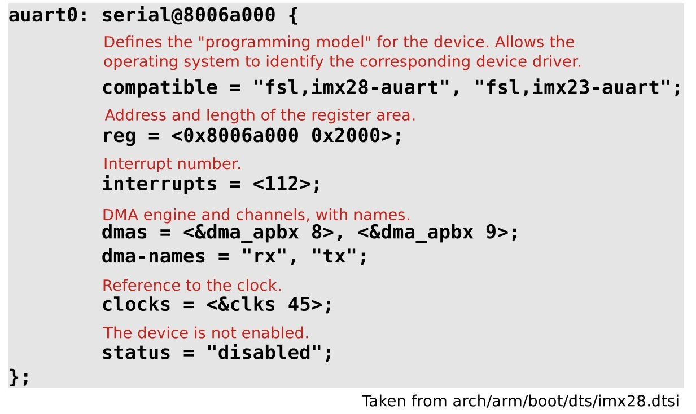
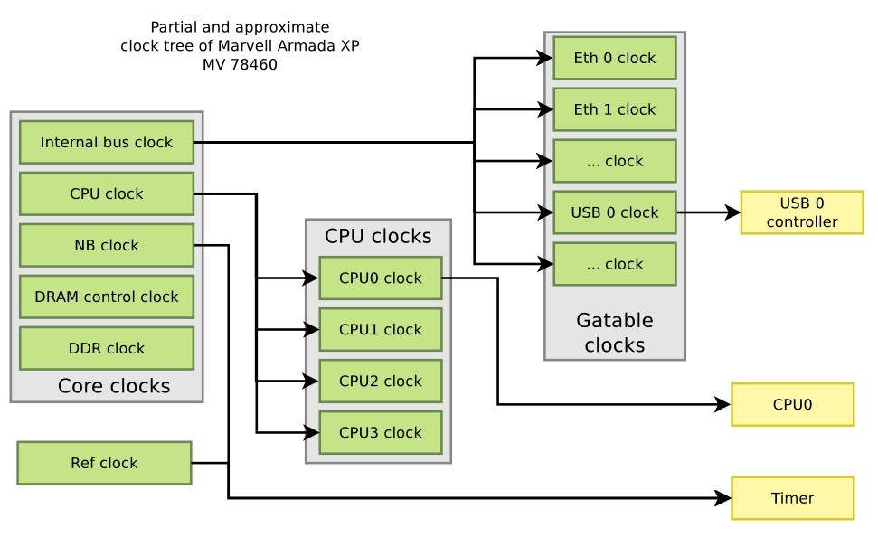

Linux Device tree
Table of Contents
booting with a Device Tree
- The kernel no longer contains the description of the hardware, it is located in a separate binary: the device tree blob
- The bootloader loads two binaries: the kernel image and the DTB
- Kernel image remains
uImageorzImage - DTB located in
arch/arm/boot/dts, one per board
- Kernel image remains
- The bootloader passes the DTB address through r2. It is supposed to adjust the DTB with memory information, kernel command line, and potentially other info.
- No more machine type
- U-Boot command:
bootm <kernel img addr> - <dtb addr>
Device Tree
- A device tree is a tree data structure with nodes that describe the physical devices in a system.
- An ePAPR(Embedded Power Architecture Platform Requirements)-compliant device tree describes device information in a system that cannot be dynamically detected by a client program.
Basic Device Tree syntax

From source to binary
- On ARM, all Device Tree Source files (DTS) are for now located in
arch/arm/boot/dts.dtsfiles for board-level definitions.dtsifiles for included files, generally containing SoC-level definitions
- A tool, the Device Tree Compiler compiles the source into a binary
form.
- Source code located in
scripts/dtc
- Source code located in
- The Device Tree Blob is produced by the compiler, and is the binary that gets loaded by the bootloader and parsed by the kernel at boot time.
arch/arm/boot/dts/Makefilelists which DTBs should be generated at build time.dtb-$(CONFIG_ARCH_MVEBU) += armada-370-db.dtb \ armada-370-mirabox.dtb \ ...
A simple example
The Device Tree side: 
The compatible string used to bind a device with the driver:
static struct of_device_id mxs_auart_dt_ids[] = { { .compatible = "fsl,imx28-auart", .data = &mxs_auart_devtype[IMX28_AUART] }, { .compatible = "fsl,imx23-auart", .data = &mxs_auart_devtype[IMX23_AUART] }, { /* sentinel */ } }; MODULE_DEVICE_TABLE(of, mxs_auart_dt_ids); // [...] static struct platform_driver mxs_auart_driver = { .probe = mxs_auart_probe, .remove = mxs_auart_remove, .driver = { .name = "mxs-auart", .of_match_table = mxs_auart_dt_ids, }, }; // Code from drivers/tty/serial/mxs-auart.c
of_match_device allowsto get the matching entry in themxs_auart_dt_ids table.- Useful to get the driver-specific
datafield, typically used to alter the behavior of the driver depending on the variant of the detected device. of_match_deviceallows to get the matching entry in themxs_auart_dt_idstable- Useful to get the driver-specific
datafield, typically used to alter the behavior of the driver depending on the variant of the detected device.static int mxs_auart_probe(struct platform_device *pdev) { const struct of_device_id *of_id = of_match_device(mxs_auart_dt_ids, &pdev->dev); if (of_id) { /* Use of_id->data here */ // [...] } // [...] }
some driver examples:
- Getting a reference to the clock
- described by the
clocksproperty s->clk = clk_get(&pdev->dev, NULL);
- described by the
- Getting the I/O registers resource
- described by the
regproperty r = platform_get_resource(pdev, IORESOURCE_MEM, 0);
- described by the
- Getting the interrupt
- described by the
interruptsproperty s->irq = platform_get_irq(pdev, 0);
- described by the
- Get a DMA channel
- described by the
dmasproperty s->rx_dma_chan = dma_request_slave_channel(s->dev, "rx");s->tx_dma_chan = dma_request_slave_channel(s->dev, "tx");
- described by the
- Check some custom property
struct device_node *np = pdev->dev.of_node;if (of_get_property(np, "fsl,uart-has-rtscts", NULL))
Device Tree inclusion
- Device Tree files are not monolithic, they can be split in several files, including each other.
.dtsifiles are included files, while.dtsfiles are final Device Trees.- Typically,
.dtsiwill contain definition of SoC-level information. - The
.dtsfile contains the board-level information. - The inclusion works by overlaying the tree of the including file over the tree of the included file.
- Inclusion using the DT operator
/include/, or since a few kernel releases, the DTS go through the C preprocessor, so#includeis recommended.
Device Tree inclusion example:

Device Tree binding
- bindings, for how specific types and classes of devices are represented in the device tree.
- The
compatibleproperty of a device node describes the specific binding (or bindings) to which the node complies. - When creating a new device tree representation for a device, a binding should be created that fully describes the required properties and value of the device. This set of properties shall be sufficiently descriptive to provide device drivers with needed attributes of the device.
Documentation of Device Tree bindings
All Device Tree bindings recognized by the kernel are documented in
Documentation/devicetree/bindings.
A Device Tree binding documentation example:
Documentation/devicetree/bindings/tty/serial/fsl-mxs-auart.txt
*Freescale MXS Application UART (AUART)
Required properties:
- compatible : Should be "fsl,<soc>-auart". The supported SoCs include
imx23 and imx28.
- reg : Address and length of the register set for the device
- interrupts : Should contain the auart interrupt numbers
- dmas: DMA specifier, consisting of a phandle to DMA controller node
and AUART DMA channel ID.
Refer to dma.txt and fsl-mxs-dma.txt for details.
- dma-names: "rx" for RX channel, "tx" for TX channel.
Example:
auart0: serial@8006a000 {
compatible = "fsl,imx28-auart", "fsl,imx23-auart";
reg = <0x8006a000 0x2000>;
interrupts = <112>;
dmas = <&dma_apbx 8>, <&dma_apbx 9>;
dma-names = "rx", "tx";
};
Note: Each auart port should have an alias correctly numbered in "aliases"
node.
Example:
[...]
compatible property
The top-level compatible property typically defines a compatible
string for the board, and then for the SoC.
Used to match with the dt_compat field of the DT_MACHINE
structure:
static const char *mxs_dt_compat[] __initdata = { "fsl,imx28", "fsl,imx23", NULL, }; DT_MACHINE_START(MXS, "Freescale MXS (Device Tree)") .dt_compat = mxs_dt_compat, //[...] MACHINE_END
Can also be used within code to test the machine:
if (of_machine_is_compatible("fsl,imx28-evk")) imx28_evk_init();
Bus, address cells and size cells
Inside a bus, one typically needs to define the following properties:
- A compatible property, which identifies the bus controller. Child nodes will be registered as platform devices.
- The
#address-cellsproperty indicate how many cells (i.e 32 bits values) are needed to form the base address part in theregproperty. - The
#size-cellsis the same, for the size part of theregproperty. - The
rangesproperty can describe an address translation between the child bus and the parent bus. When simply defined asranges;, it means that the translation is an identity translation.
- I2C bus, address cells and size cells example
i2c0: i2c@80058000 { #address-cells = <1>; #size-cells = <0>; compatible = "fsl,imx28-i2c"; reg = <0x80058000 0x2000>; interrupts = <111>; #[...] sgtl5000: codec@0a { compatible = "fsl,sgtl5000"; reg = <0x0a>; VDDA-supply = <®_3p3v>; VDDIO-supply = <®_3p3v>; clocks = <&saif0>; }; at24@51 { compatible = "at24,24c32"; pagesize = <32>; reg = <0x51>; }; };
Interrupt handling
interrupt-controller; is a boolean property that indicates that the current node is an interrupt controller.#interrupt-cellsindicates the number of cells in theinterruptsproperty for the interrupts managed by the selected interrupt controller.interrupt-parentis a phandle that points to the interrupt controller for the current node. There is generally a top-levelinterrupt-parentdefinition for the main interrupt controller.
- Interrupt example:
imx28.dtsi/ { interrupt-parent = <&icoll>; apb@80000000 { apbh@80000000 { icoll: interrupt-controller@80000000 { compatible = "fsl,imx28-icoll", "fsl,icoll"; interrupt-controller; #interrupt-cells = <1>; reg = <0x80000000 0x2000>; }; ssp0: ssp@80010000 { #[...] interrupts = <96>; }; }; }; };
Clock tree example, Marvell Armada XP

- Clock examples: instantiating clocks
soc { coreclk: mvebu-sar@18230 { compatible = "marvell,armada-xp-core-clock"; reg = <0x18230 0x08>; #clock-cells = <1>; }; cpuclk: clock-complex@18700 { #clock-cells = <1>; compatible = "marvell,armada-xp-cpu-clock"; reg = <0x18700 0xA0>; clocks = <&coreclk 1>; }; gateclk: clock-gating-control@18220 { compatible = "marvell,armada-xp-gating-clock"; reg = <0x18220 0x4>; clocks = <&coreclk 0>; #clock-cells = <1>; }; } clocks { /* 25 MHz reference crystal */ refclk: oscillator { compatible = "fixed-clock"; #clock-cells = <0>; clock-frequency = <25000000>; }; }; - Clock examples: consuming clocks
CPU, using a cpuclk
cpu@0 { device_type = "cpu"; compatible = "marvell,sheeva-v7"; reg = <0>; clocks = <&cpuclk 0>; };imer, using either a coreclk or refclk
timer@20300 { compatible = "marvell,armada-xp-timer"; clocks = <&coreclk 2>, <&refclk>; clock-names = "nbclk", "fixed"; };USB, using a gateclk
usb@52000 { compatible = "marvell,orion-ehci"; reg = <0x52000 0x500>; interrupts = <47>; clocks = <&gateclk 20>; status = "disabled"; };
pinctrl binding
- The
pinctrlsubsystem allows to manage pin muxing. - In the Device Tree, devices that need pins to be muxed in a certain way must declare the pinctrl configuration they need.
- The
pinctrl-<n>properties allow to give the list of pinctrl configuration needed for a certain state of the device. - The
pinctrl-namesproperty allows to give a name to each state. - When a device is probed, its
defaultpinctrl state is requested automatically.ssp0: ssp@80010000 { pinctrl-names = "default"; pinctrl-0 = <&mmc0_8bit_pins_a &mmc0_cd_cfg &mmc0_sck_cfg>; [...] };
- pinctrl configurations
- A
pinctrlconfiguration provides a list of pins and their configuration. - Such configurations are defined as sub-nodes of the pinctrl device, either at the SoC-level, or board-level.
- The binding for such configurations is highly dependent on the
specific
pinctrldriver being used.
i.MX28
mmc0_8bit_pins_a: mmc0-8bit@0 { fsl,pinmux-ids = < 0x2000 /* MX28_PAD_SSP0_DATA0__SSP0_D0 */ 0x2010 /* MX28_PAD_SSP0_DATA1__SSP0_D1 */ [...] 0x2090 /* MX28_PAD_SSP0_DETECT__SSP0_... */ 0x20a0 /* MX28_PAD_SSP0_SCK__SSP0_SCK */ >; fsl,drive-strength = <1>; fsl,voltage = <1>; fsl,pull-up = <1>; };Marvell Kirkwood
pmx_nand: pmx-nand { marvell,pins = "mpp0", "mpp1", "mpp2", "mpp3", "mpp4", "mpp5", "mpp18", "mpp19"; marvell,function = "nand"; }; - A
More references
- Device Tree for Dummies - The Linux Foundation
- Device Tree Usage: how to write a device tree for a new machine
- DeviceTree.org website, http://www.devicetree.org
- Device Tree Specification Release 0.1
- Device Tree documentation in the kernel sources,
Documentation/devicetree